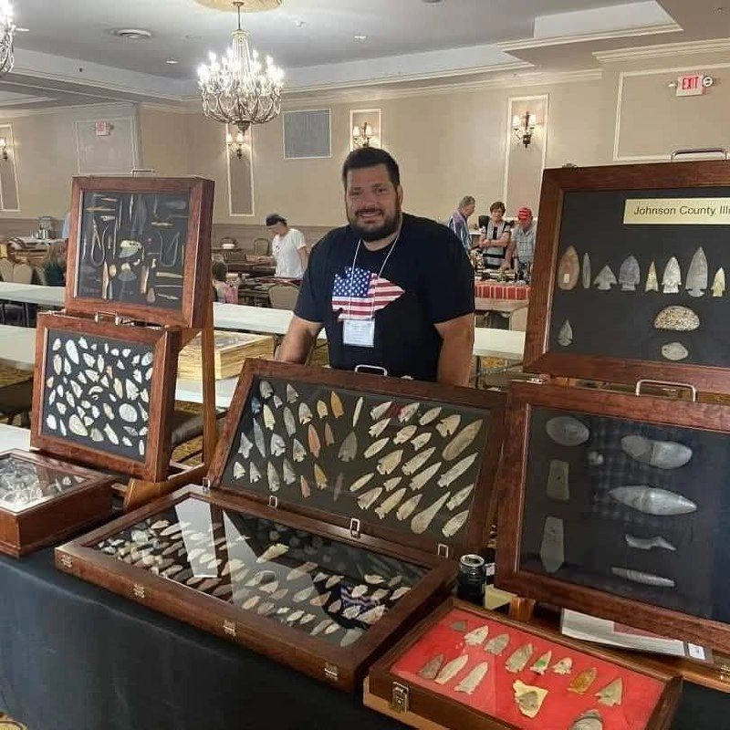
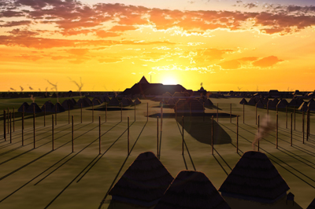
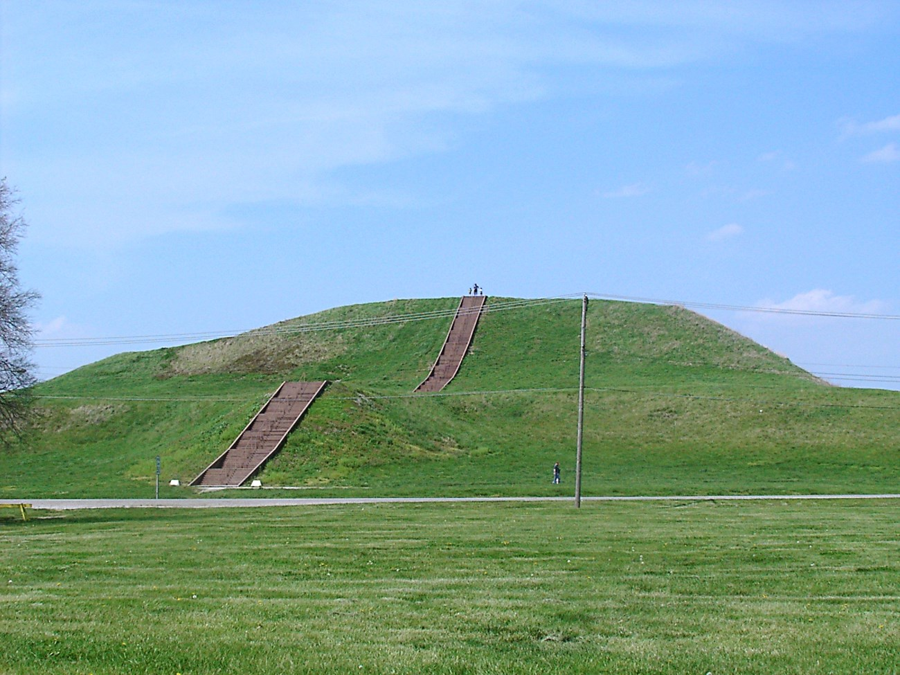
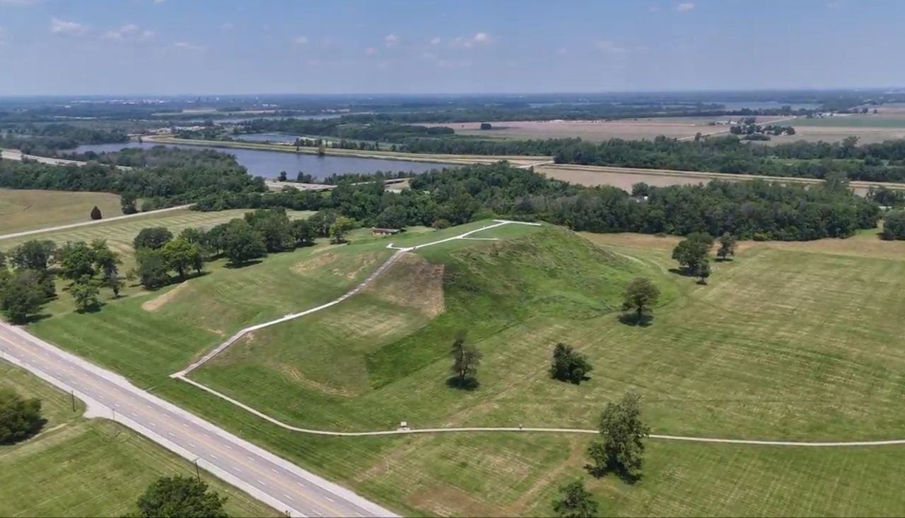

The Collinsville
Prehistoric Artifact Show
Forty years running. Nearly two hundred exhibitors. The largest gathering of serious collectors, dealers, and authentic prehistoric Native American artifacts in the central United States — minutes from Cahokia Mounds, the largest pre-Columbian city north of Mexico.
Forty years of the real thing.
The Collinsville Prehistoric Artifact Show has run every March since 1988 — first as a regional Midwest gathering, now a coast-to-coast event that draws the country's top collectors, dealers, and authenticators to a single convention center floor in southern Illinois.
The show is invitation-only for dealers and exhibitors. Every piece on the floor is required to be authentic — prehistoric, or pre-1900 historic Native American. No contemporary material. No reproductions. The strictness is the point.
It's why collectors return year after year, why dealers handling the region's most significant estates choose this floor, and why the country's leading auction houses make the drive.

What you can expect
~200 exhibitors of authentic prehistoric artifacts — points, bannerstones, knives, celts, pottery, pipes, beads, discoidals.
All weekend long on the floor with the country's best collectors, with downtime for serious conversation in the aisles.
Walkable from any of nine hotels in the Gateway Convention Center hospitality district.
Five miles from Cahokia Mounds — the largest pre-Columbian city north of Mexico. If you're making the trip, climb Monks Mound.
Out-of-town? Here's what you need.
Collinsville is small, easy, and built for this weekend. Within walking distance of the venue: nine hotels, twenty restaurants, free parking, and Cahokia Mounds five miles south.
The hours
| Friday, March 12 | 3:00 PM – 7:00 PM |
| Saturday, March 13 | 8:00 AM – 5:00 PM |
| Sunday, March 14 | 8:00 AM – 2:00 PM |
Where to stay
Nine hotels, more than 900 rooms, all walking distance from the venue. Book early — March weekends in Collinsville fill up four to six weeks out, and the Drury and DoubleTree are the first to sell out.
Premium — comfort and amenities
- DoubleTree by Hilton Collinsville – St. Louis
- Drury Inn & Suites Collinsville
- Fairfield by Marriott Collinsville
- Hampton Inn Collinsville
Mid-range — solid, no frills
- Comfort Inn Collinsville
- La Quinta Inn & Suites
Budget — just a bed
- Days Inn
- Super 8
- Americas Best Value Inn
Getting there
-
Fly into St. Louis Lambert (STL)
25 miles / 30 minutes from the venue. All major car rental brands on-site. Uber/Lyft averages $54. Direct flights from most US hubs.
-
Driving from anywhere in the Midwest
Chicago 5h · Indianapolis 4h · Nashville 5h · Memphis 4.5h · Kansas City 4h · Louisville 4h. I-55 and I-70 converge at Collinsville. Free parking at the venue.
-
Amtrak to St. Louis
Lincoln Service from Chicago (4× daily) or Texas Eagle from San Antonio. From Gateway Station, Uber to Collinsville ~25 min, ~$40.
What to bring
-
Cash in small bills + checks
Many vendors don't take cards. Don't be the guy at the table fumbling for a $100.
-
A 10× loupe and calipers
You'll use both. Make sure your loupe is actually clean.
-
A notebook for provenance
The best pieces come with a story. Write it down. Photo the COA before you put the piece in your case.
-
A padded case
If you're buying, you need something to carry it home in. Don't pack a Clovis in your coat pocket.
-
Patience for Saturday morning
Doors open at 8 AM. The serious buyers are lined up at 7:45. Be one of them.
Stand on top of a city of twenty thousand people.
Cahokia Mounds is the largest pre-Columbian settlement north of Mexico. At its peak around 1100 CE, it covered 4,000 acres, included 120 earthen mounds, and had a population of between ten and twenty thousand — larger than London was at the same time.
Then it was abandoned. Then it was built over, plowed under, forgotten. Then, in 1982, UNESCO made it a World Heritage Site.
Today, the centerpiece is Monks Mound — the largest prehistoric earthen mound in the Americas, 100 feet tall, four terraces, climbable. There's a stairway. At the top, the view explains why this was a city: the river confluence is right there, the bottomland is fertile, and the mound commands everything.


You're already here. Stay a day.
Between the show and the mounds, the area has more than you'd expect. Here's how to spend the time that's not on the convention center floor.

Cahokia Mounds
Climb Monks Mound. Walk the Grand Plaza. See Woodhenge — the wooden solar calendar. Then drive back to the hotel and pretend you're not exhausted.
5 mi · 10 min from venueSt. Louis
Cross the river. Forest Park and the Saint Louis Art Museum have one of the finest Mississippian artifact collections in any museum — Cahokia-era pieces excavated from Mound 72. Then Italian on The Hill.
12 mi · 15 min from venueSt. Louis + Forest Park
Gateway Arch in the morning, Forest Park in the afternoon (the Art Museum is free, the Zoo is free), Pappy's Smokehouse or Italian on The Hill for dinner. The Hill is worth the trip by itself.
All under 30 min from venueThings that aren't artifacts
The Hill (Italian neighborhood). The Gateway Arch. Forest Park Zoo. The City Museum — bizarre, brilliant, adults-only spaces upstairs. Cahokia Mounds itself is a stunning walk.
St. Louis · 15 minBreakfast in Collinsville
Spring Garden Family Restaurant opens at 6 AM. Lottie's Cafe and Old Herald Brewery & Bistro are also solid. Don't try to find a decent breakfast at the venue.
All walking distanceLocal food, real food
Bandana's BBQ for casual. Porter's Steakhouse for celebration. Ravanelli's for Italian-American comfort food. Horseshoe Restaurant for late-night sports bar. Don't sleep on the local diners.
Walking distance from venueThe floor is by invitation.
The Collinsville show is invitation-only for dealers and exhibitors. We keep the floor small enough that every piece is known, vetted, and authentic. That's the whole point.
If you've exhibited at major artifact shows and want to be considered for the 40th Annual, reach out. We're typically fully booked by mid-November for the following March, but we occasionally have openings from cancellations or expanded sections.
-
Strict authenticity standards
Only authentic prehistoric or pre-1900 historic Native American artifacts may be displayed or sold. No contemporary Native American material.
-
Setup logistics
Load-in is the Thursday before the show. Details go to confirmed exhibitors in February.
-
Hotel block
We hold a small block at the Drury Inn for traveling exhibitors. Mention "Collinsville show exhibitor block" when booking.
-
To inquire
Contact Nick Gatses via the Barn Burner Relics site (below). He'll respond within a week.
March 12–14, 2027 · Collinsville, IL
Forty years. The Super Bowl of artifacts. Five miles from the largest pre-Columbian city north of Mexico. See you on the floor.
Visit Barn Burner Relics →